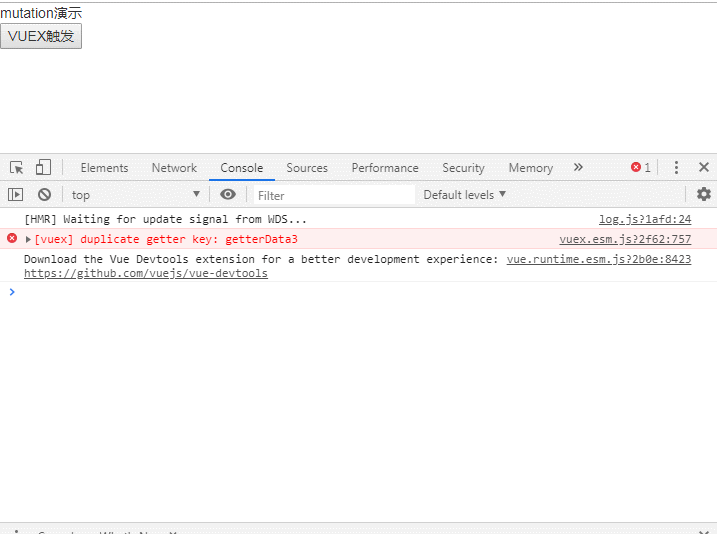

vue规定使用mutation和actions修改state中的数据。
mutation必须是同步函数(但使用setTimeout仍然是有效的)。
actions可以包含任意异步操作。
基于vue-cli的示例：
页面实际展示内容：

代码：
main.js
import Vue from 'vue'
import App from './App.vue'
import store from './store/vuexStore' //引入状态管理 store ,PS:名称只能是store,如变更会导致组件中无法获取到
new Vue({
store,//注册store(这可以把 store 的实例注入所有的子组件),PS:名称只能是store,如变更会导致组件中无法获取到
render: h => h(App)
}).$mount('#app')vuexStore.js vuex的定义，在main.js中import
import Vue from 'vue';
import Vuex from 'vuex'; //引入 vuex
Vue.use(Vuex); //使用 vuex
const state = {
// 初始化状态
stateData9:"mutation演示",
}
export default new Vuex.Store({
state:state,
// mutation 必须是同步函数(但使用setTimeout仍然是有效的)
mutations: {//提交(修改)state
mutationData1:function(state,payload){//只接受2个参数，参数1：state，参数2：传入参数
window.console.info("经过mutationData1传入参数为"+payload);
state.stateData9+=":经过mutations被变更了，传入参数为"+payload;
},
/* 使用ES6的自动生成修改方法的骚操作，必须在外提前定义state，但是有代价（代码静态检查完蛋了）来自参考：https://forum.vuejs.org/t/vuex-state/39459/5
...Object.keys(state).reduce((obj, key) => {
return {
...obj,
[key]: (state, payload) => state[key] = payload,
}
}, {})
*/
//自动生成并对传参类型进行限制的示例
...Object.keys(state).reduce((obj, key) => {
return {
...obj,
[key]: (state, payload) => {
//window.console.info(state[key])
//window.console.info(payload)
switch (Object.prototype.toString.call(state[key])) {
case "[object Number]":
if("[object Number]"==Object.prototype.toString.call(state[key]))state[key] = payload
else window.console.error("传入参数类型错误:Number "+state[key]);
break;
case "[object Array]":
break;
case "[object String]":state[key] = payload
break;
case "[object Boolean]":state[key] = payload
break;
case "[object Null]":state[key] = payload
break;
case "[object Undefined]":state[key] = payload
break;
case "[object Object]":
break;
default:
break;
}
},
}
}, {})
},
actions: {
//名称可以与mutations相同，可以调用多个mutations（分发）
actionData1 (context,payload) {//只接受2个参数，参数1：context，参数2：传入参数
//context 是 store 实例具有相同方法和属性的 context 对象,但 context 不是 store 本身
context.commit('mutationData1',payload);//通过 commit 调用 mutations
setTimeout(() => {//可以包含任意异步操作
context.commit('mutationData1','异步操作1');//通过 commit 调用 mutations
}, 1000)
setTimeout(() => {//可以包含任意异步操作
context.commit('mutationData1','异步操作2');//通过 commit 调用 mutations
}, 2000)
},
actionData2 (context,payload) {
payload;
context.dispatch('actionData1');//通过 dispatch 调用其他 actions
},
//利用ES6+?新特性 async/await 组合 actions
},
})Example.vue
<template>
<div>
{{this.$store.state.stateData9}}<br>
<input type="button" value="VUEX触发" @click='vuexClick'>
</div>
</template><script>
//关于 Vue 实例中的 this: 在Vue实例中，要获取 data 中的数据 或者 methods 中的方法，必须使用 this. 访问，这里的 this 表示 Vue 实例对象
export default {
methods:{// methods 属性中定义了当前 Vue 实例所有可用方法
vuexClick(){
//获取state
this.$store.state.stateData1;
//获取getters
this.$store.getters.getterData2;
//修改state
//this.$store.state.stateData1="直接修改";//直接修改，可以修改但不推荐
//调用 commit() 通过 mutations 修改 state
this.$store.commit('mutationData1',2);//只接受2个参数，参数1：mutations名称，参数2：传入参数
//调用 dispatch() 通过 actions 修改 state,（PS:在 actions 中仍然要通过 commit() 调用 mutations 修改）
this.$store.dispatch('actionData1',2);//只接受2个参数，参数1：actions名称，参数2：传入参数
}
},
};
</script>